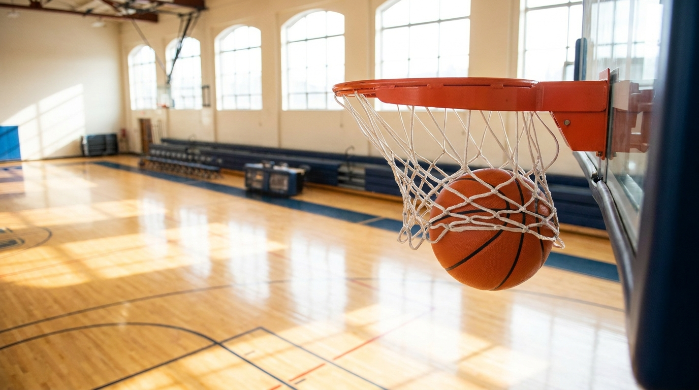
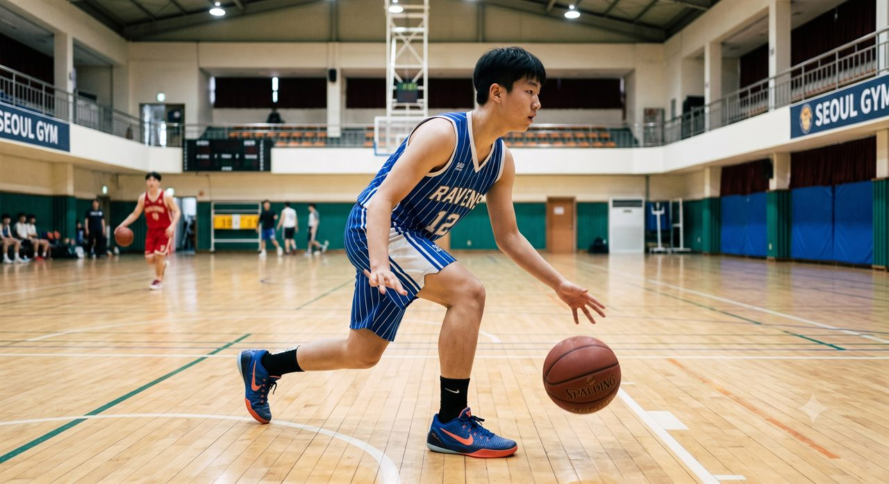
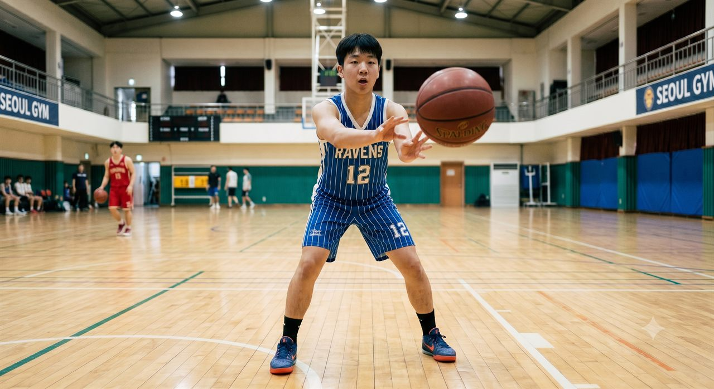
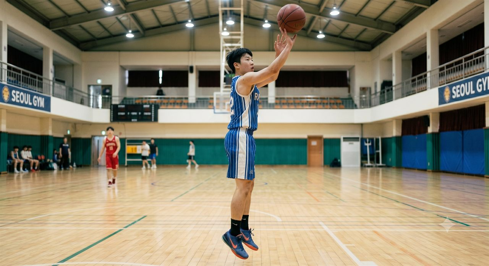

농구란?
손으로 공을 다루는 대표적인 영역형 경쟁 스포츠
- 1목표 — 제한 시간 안에 상대 바스켓(높이 3.05m)에 공을 더 많이 넣기
- 2인원 — 코트 위 각 팀 5명 + 교체 선수
- 3방법 — 드리블·패스·슛으로만 공 이동 (들고 뛰면 안 됨)
1891년 제임스 네이스미스 고안
전 세계 인기 구기
실내·실외 모두 가능

5명이 한 팀이 되어 상대 바스켓에 공을 넣어 더 많은 점수를 얻는 경기. 빠른 공수 전환과 팀워크, 정확한 슛이 승부를 가릅니다.
손으로 공을 다루는 대표적인 영역형 경쟁 스포츠
코트의 주요 선과 구역
경기는 이렇게 흘러갑니다
4쿼터로 진행(정규 10분/쿼터). 학교 수업은 시간·인원을 변형해 운영. 동점이면 연장전.
중앙서클에서 점프볼로 시작. 득점 후엔 상대팀이 엔드라인에서 스로인.
공을 잡으면 정해진 시간 안에 슛 시도(정규 24초). 시간 초과 시 공격권 상실.
슛·턴오버·리바운드로 공 소유가 바뀌면 즉시 공격↔수비 전환.
역할을 나눠 코트를 효율적으로 사용
어디서 넣느냐에 따라 점수가 다릅니다
알아두면 경기가 보인다
드리블 없이 3걸음 이상 이동. 가장 흔한 반칙.
드리블을 멈췄다가 다시 시작. 두 손으로 잡았다 다시 튕기기.
상대를 밀거나 잡는 신체 접촉. 슛 동작 중이면 자유투.
3초 룰(제한구역)·24초 룰(공격 시간) 초과.

공을 안전하게 운반하는 기본기
동료에게 빠르고 정확하게 연결


정확한 슛은 바른 자세에서 나옵니다
달리며 바스켓 가까이에서 올려놓는 슛
오른쪽에서 들어가면 오른손, 왼쪽에서 들어가면 왼손으로 올리는 것이 기본입니다.
부상 없이 즐기는 것이 가장 중요합니다
점프 착지가 잦아 염좌 위험. 준비운동으로 발목을 풀고 무릎을 굽혀 부드럽게 착지.
패스를 잘못 받으면 부상. 손끝이 아닌 손바닥으로 맞이하기.
좁은 공간 충돌 주의. 주변을 살피고 무리한 몸싸움 금지.
운동화 끈 단단히, 손톱 짧게, 충분한 수분 섭취와 준비운동.
예시 루브릭 (학교 상황에 맞게 조정)
| 영역 | 평가 내용 | 배점 |
|---|---|---|
| 기능 | 레이업 슛 성공 (5회 중) | 30 |
| 기능 | 지그재그 드리블 통과 기록 | 20 |
| 경기 | 게임 중 패스·수비 참여도 | 30 |
| 태도 | 규칙 준수 · 협동 · 안전 | 20 |
기능·경기·태도를 고루 평가해 실력과 참여를 함께 반영합니다.